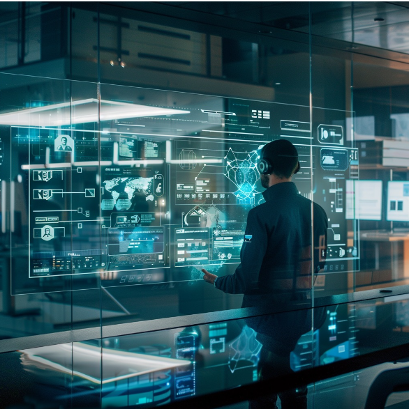

Responsible for promoting the company's cloud and industry
Internet strategy, CSIG explores the interactions between users and
industries to create innovative solutions for smart industries via
technological
advancements such as cloud, AI, and network security. While driving the
digitalization of retail, medical, education, transportation and other
industries, CSIG helps companies serve users in smarter ways,
building a new ecosystem of intelligent industries that connect users
and businesses.
FUTEK TECHNOLOGY
About Us
FUTEK TECHNOLOGY is a internet and technology company that develops innovative products and services to improve the quality of life of people around the world.
Company Structure
CDG
Corporate Development Group
As the platform for the company's new business incubation
and new business exploration, CDG is responsible for promoting
development and innovation for important areas such as financial
technology and advertising,
as well as marketing services, including payment and financial
applications. As a professional support platform, CDG also supports the
company and various business groups in strategic planning, investments
and mergers, investor relations and corporate global communications,
marketing and public relations, and more.
CSIG
Cloud & Smart Industries Group
IEG
Interactive Entertainment
Group
Responsible for the R&D, operation, and development of the
company's interactive entertainment business including games and
eSports. Through online gaming, live broadcasts, and offline eSports,
IEG assists the
company in leading the global interactive entertainment market to create
better interactive entertainment content experiences for users.
PCG
Platform & Content Group
Responsible for the company's Internet platform and the
integrated development of the content and culture ecosystem. PCG
integrates social platforms such as QQ and QZone with traffic platforms
such as Tencent's
App Store and browsers, as well as content platforms including news,
videos, sports, live broadcasts, animes and movies to develop a better
growth environment for Tencent's content ecosystem. PCG promotes
the cross-platform and multi-modal development of IP, with the overall
goal of creating more diversified premium digital content experiences
for more users.
TEG
Technology Engineering Group
Responsible for supporting the company and its business
groups on technology and operational platforms, as well as the
construction and operation of R&D management and data centers, TEG
provides users with a
full range of customer services. As the operator of the largest
networking, devices, and data center in Asia, TEG also leads the Tencent
Technology Committee in strengthening infrastructure R&D through
internal
and distributed open source collaboration, constructing new platforms
and supporting business innovation.
WXG
Weixin Group
Responsible for the construction and operation of the
Weixin ecosystem and leveraging Weixin's open platforms such as Official
Accounts, Mini Programs, Weixin Pay, WeCom and search function, WXG
provides solutions
and connectivity for intelligent upgrades across all industries. WXG is
also responsible for the development and operation of QQ Mail, WeRead
and other products.
Company Structure
CDG
Corporate Development Group

CSIG
Cloud & Smart Industries Group
IEG
Interactive Entertainment Group
PCG
Platform & Content Group
TEG
Technology Engineering Group
WXG
Weixin Group
As the platform for the company's new
business incubation and new business exploration, CDG is responsible for
promoting development and innovation for important areas such as financial
technology and advertising, as well as marketing services, including payment
and financial applications. As a professional support platform, CDG also
supports the company and various business groups in strategic planning,
investments and mergers, investor relations and corporate global
communications, marketing and public relations, and more.
Responsible for promoting the company's cloud and
industry Internet strategy, CSIG explores the interactions between users and
industries to create innovative solutions for smart industries via
technological advancements such as cloud, AI, and network security. While
driving the digitalization of retail, medical, education, transportation and
other industries, CSIG helps companies serve users in smarter ways, building
a new ecosystem of intelligent industries that connect users and businesses.
Responsible for the R&D, operation, and development of
the company's interactive entertainment business including games and
eSports. Through online gaming, live broadcasts, and offline eSports, IEG
assists the company in leading the global interactive entertainment market
to create better interactive entertainment content experiences for users.
Responsible for the company's Internet platform and the
integrated development of the content and culture ecosystem. PCG integrates
social platforms such as QQ and QZone with traffic platforms such as
Tencent's App Store and browsers, as well as content platforms including
news, videos, sports, live broadcasts, animes and movies to develop a better
growth environment for Tencent's content ecosystem. PCG promotes the
cross-platform and multi-modal development of IP, with the overall goal of
creating more diversified premium digital content experiences for more
users.
Responsible for supporting the company and its business
groups on technology and operational platforms, as well as the construction
and operation of R&D management and data centers, TEG provides users with a
full range of customer services. As the operator of the largest networking,
devices, and data center in Asia, TEG also leads the Tencent Technology
Committee in strengthening infrastructure R&D through internal and
distributed open source collaboration, constructing new platforms and
supporting business innovation.
Responsible for the construction and operation of the
Weixin ecosystem and leveraging Weixin's open platforms such as Official
Accounts, Mini Programs, Weixin Pay, WeCom and search function, WXG provides
solutions and connectivity for intelligent upgrades across all industries.
WXG is also responsible for the development and operation of QQ Mail, WeRead
and other products.
